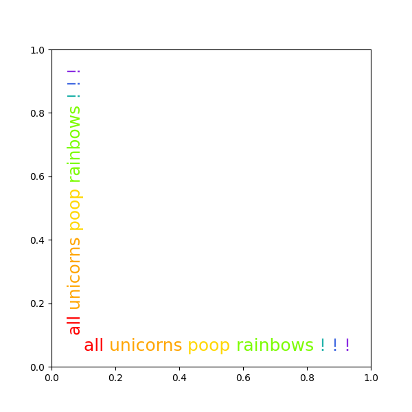

Note
Click here to download the full example code
Rainbow text¶
The example shows how to string together several text objects.
History¶
On the matplotlib-users list back in February 2012, Gökhan Sever asked the following question:
Is there a way in matplotlib to partially specify the color of a string?
Example:
plt.ylabel("Today is cloudy.")
How can I show "today" as red, "is" as green and "cloudy." as blue?
Thanks.
The solution below is modified from Paul Ivanov's original answer.
import matplotlib.pyplot as plt
from matplotlib.transforms import Affine2D
def rainbow_text(x, y, strings, colors, orientation='horizontal',
ax=None, **kwargs):
"""
Take a list of *strings* and *colors* and place them next to each
other, with text strings[i] being shown in colors[i].
Parameters
----------
x, y : float
Text position in data coordinates.
strings : list of str
The strings to draw.
colors : list of color
The colors to use.
orientation : {'horizontal', 'vertical'}
ax : Axes, optional
The Axes to draw into. If None, the current axes will be used.
**kwargs
All other keyword arguments are passed to plt.text(), so you can
set the font size, family, etc.
"""
if ax is None:
ax = plt.gca()
t = ax.transData
canvas = ax.figure.canvas
assert orientation in ['horizontal', 'vertical']
if orientation == 'vertical':
kwargs.update(rotation=90, verticalalignment='bottom')
for s, c in zip(strings, colors):
text = ax.text(x, y, s + " ", color=c, transform=t, **kwargs)
# Need to draw to update the text position.
text.draw(canvas.get_renderer())
ex = text.get_window_extent()
if orientation == 'horizontal':
t = text.get_transform() + Affine2D().translate(ex.width, 0)
else:
t = text.get_transform() + Affine2D().translate(0, ex.height)
words = "all unicorns poop rainbows ! ! !".split()
colors = ['red', 'orange', 'gold', 'lawngreen', 'lightseagreen', 'royalblue',
'blueviolet']
plt.figure(figsize=(6, 6))
rainbow_text(0.1, 0.05, words, colors, size=18)
rainbow_text(0.05, 0.1, words, colors, orientation='vertical', size=18)
plt.show()
Keywords: matplotlib code example, codex, python plot, pyplot Gallery generated by Sphinx-Gallery